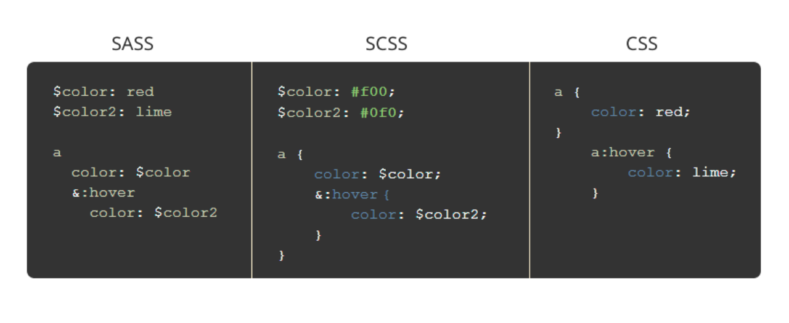
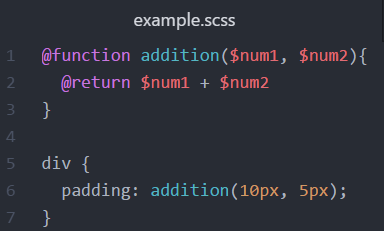
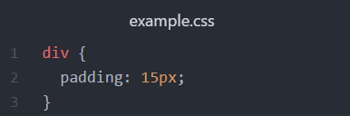
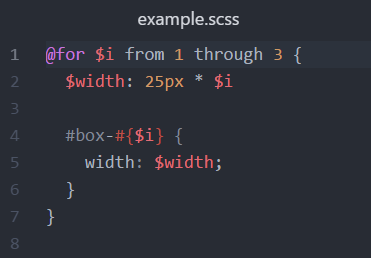
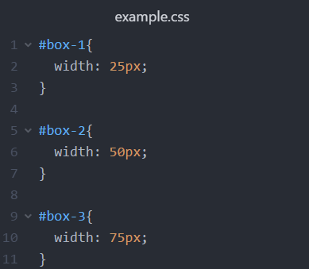

Sass is a CSS preprocessor that simplifies writing CSS. It adds a lot of features of programming languages to CSS, from functions to loops and much more. Sass makes more sense when writing CSS from a human point of view, and makes it so that you stay DRY (you Don't Repeat Yourself).
Sass was created in 2006 by Hampton Caitlin and Natalie Weizenbaum, and Sass files originally ended in .sass. However, in the newest version of Sass, files end in .scss. .sass files use indentation rather than brackets to indicate the nesting of selectors, use newlines rather than semicolons to separate properties, and the syntax is more similar to that of Ruby, while .scss files are more like CSS.
Like most other programming languages, Sass allows you to create and define functions, making writing CSS a lot more efficient. In Sass, function are declared using "@function", parameters are denoted with a "$" followed by the name, and the return statement is denoted with "@return".
 As shown in the above example, creating functions in Sass can prove to be very useful. And when your Sass is converted into CSS, your code is ultimately much cleaner, efficient, and user-friendly.
Like functions, loops are another feature of Sass that isn't present in CSS, making Sass much more useful. To create a loop, you use "@for" and assign an iteration variable, again using "$" followed by the name. To call the value of the iteration variable, you use "#{$varname}". NOTE: In Sass, the range of iteration is INCLUSIVE on both bounds, as shown in the example below.
 In the above example, the loops goes from 1 to 3, inclusive of both numbers. It declares that the HTML elements with ids "box-1", "box-2", and "box-3" each have widths incremented by 25 pixels. The converted CSS code turns out to become what is expected from the loop in the Sass file, saving us time from copy-and-pasting and making coding much faster!